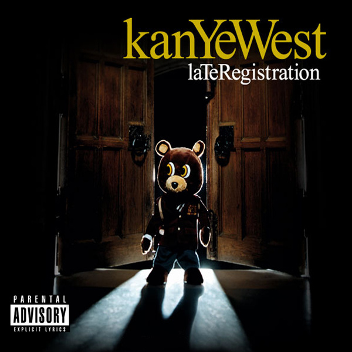

Late Registration (2005) es el segundo álbum de Kanye West y se caracteriza por su fusión innovadora de rap con arreglos orquestales, gracias a la colaboración con el productor Jon Brion. El disco amplió la visión artística de Kanye al mezclar beats de soul con instrumentos clásicos, generando un sonido más complejo y cinematográfico. A nivel lírico, aborda temas como el racismo, la fama, el consumismo y las desigualdades sociales, todo con un tono tanto crítico como personal. Con éxitos como Gold Digger, Touch the Sky y Heard ’Em Say, el álbum consolidó a Kanye como una de las figuras más influyentes e innovadoras del hip hop moderno.

1.Wake Up Mr. West
2.Heard ’Em Say (feat. Adam Levine)
3.Touch the Sky(feat. Lupe Fiasco)
4.Gold Digger (feat. Jamie Foxx)
5.Skit #1
6.Drive Slow (feat. Paul Wall & GLC)
7.My Way Home (feat. Common)
8.Crack Music (feat. The Game)
9.Roses
10.Bring Me Down (feat. Brandy)
11.Addiction
12.Skit #2
13.Diamonds from Sierra Leone (Remix) (feat. Jay-Z)
14.We Major (feat. Nas & Really Doe)
15.Skit #3
16.Hey Mama
17.Celebration
18.Skit #4
19.Gone (feat. Consequence & Camron)
Escuchar en Spotify
Pagina Principal.